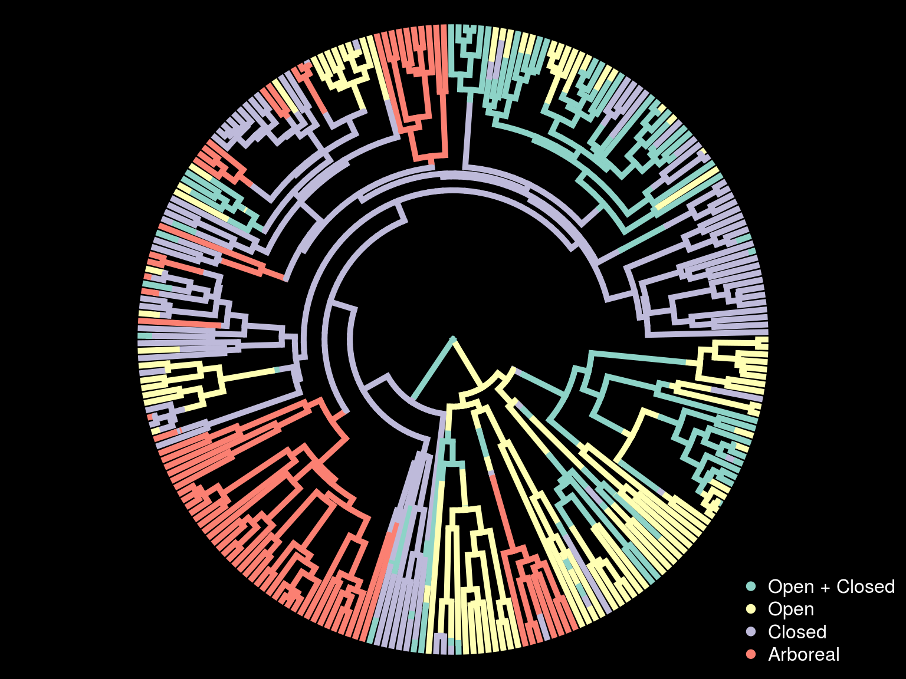
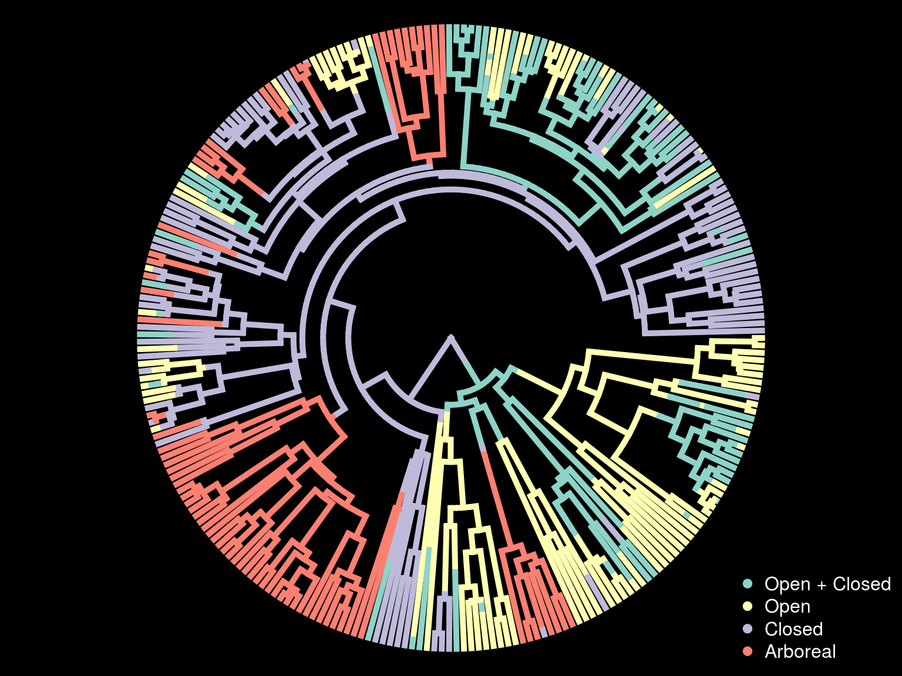
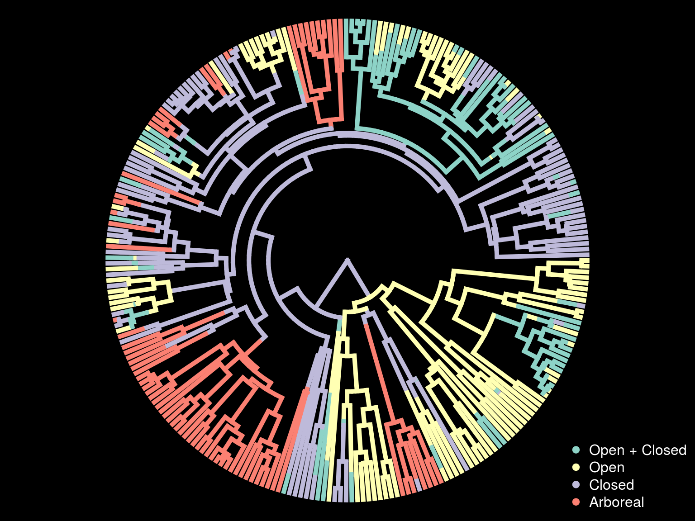

Introdução aos métodos em macroevolução
Gustavo Burin
01 de Fevereiro de 2018
Estrutura
- Teoria
- Métodos para diversificação
- Métodos para evolução fenotípica
- Recapitulação
Processo de Poisson
Interlúdio Matemático
Distribuição Poisson
- Variáveis discretas (geralmente associadas a contagens)
- Um parâmetro \(\lambda\)
Distribuição Exponencial
- Variáveis contínuas (tempo de espera nesse caso)
- Um parâmetro \(\lambda\)
- Número de chegadas: distribuição Poisson
- Intervalo entre chegadas: distribuição Exponencial (sem memória)
Processo de Poisson
Cadeias de Markov

Cadeias de Markov
Diversificação
Modelos Pure-birth/Birth-death

Voltando ao que interessa

Como achar lambda?
E a extinção?
Principais métodos
Gamma
Limitações


BiSSE
Binary State Speciation and Extinction
BiSSE
BiSSE
Outros modelos do diversitree
- MuSSE
- QuaSSE
- GeoSSE
- ClaSSE
- HiSSE
- FiSSE
Aplicações
Aplicações
Aplicações
Evolução fenotípica
Cadeias de Markov
Stochastic Mapping




Modelos de Evolução de Caracteres Contínuos
Movimento Browniano
\(dX_{t} = \sigma dB(t)\)
Ornstein-Uhlenbeck (OU)
\(dX_{t} = \alpha[ \mu - X(t)]dt + \sigma dB(t)\)
OUwie
OUwie
Brownian Motion:
\(dX_{t} = \sigma dB(t)\)
Ornstein-Uhlenbeck
\(dX_{t} = \alpha[ \mu - X(t)]dt + \sigma dB(t)\)
Recapitulação
Diversificação
- Processo de Poisson + Cadeias de Markov
- LTT
- BAMM
- diversitree
Evolução Fenotípica
- Cadeias de Markov + BM + OU
- SIMMAP
- OUwie